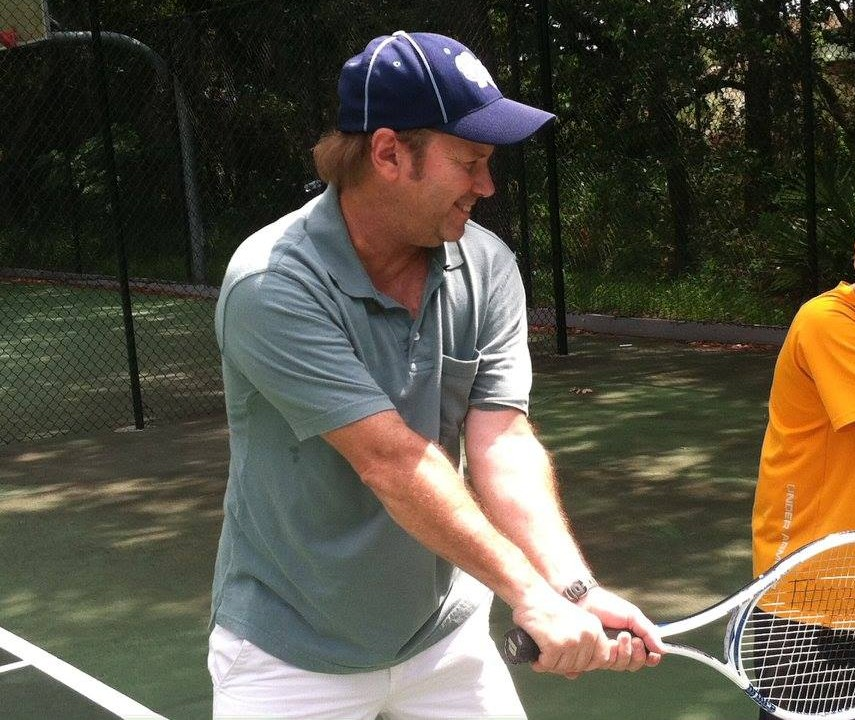

Almost every first phone call I get starts the same way. Somebody tells me they're not very good.
Sometimes it's an adult who hasn't held a racquet since high school. Sometimes it's a parent apologizing in advance for a seven-year-old who has never hit a ball. Either way, the worry underneath is the same: what if I show up and I'm the worst one there?
So let me take the mystery out of it. Here's what actually happens the first time we get on the court together.
You don't need to be good yet
This is the part I most want people to hear. A first lesson isn't a tryout. Nobody is grading you.
I've been coaching since 1985, and I have never once been disappointed by a beginner. Beginners are my favorite students to start with, honestly, because there's nothing to undo. Everything we build, we build right the first time.
If you can walk onto a court, you're ready.
What to bring
Less than you think.
Court shoes
Tennis or court shoes if you have them. Running shoes grip wrong for side-to-side movement.
Water
More than you'd guess. This is Florida.
Sun cover
A hat, sunscreen, and clothes you can move in.
A racquet, maybe
Don't buy one yet. Ask me first so you get the right size.
That last one matters. I see a lot of people, especially parents, buy a racquet before the first lesson and get the wrong size. A racquet that's too long or too heavy for a young player makes the game harder than it needs to be. Reach out beforehand and I'll tell you what to get, or whether to wait.
The first few minutes: we talk
Before we hit anything, I want to know why you're here.
Do you want to play doubles with friends? Make the high school team? Get some exercise that doesn't feel like exercise? Is your kid there because they asked, or because you're hoping they'll like it?
None of those are wrong answers. But they lead to very different lessons, and I'd rather know where we're headed than guess.
Then you hit, and I watch
We'll start close to the net with easy balls. No pressure, no score.
While you're hitting, I'm not looking for mistakes. I'm looking for what your body already does naturally. How you move. Where you hold the racquet when nobody's told you how. Whether you watch the ball or the person across from you.
That tells me more than any question could, and it's how I figure out where to start with you specifically. I don't teach from a script. What works for one beginner is almost never exactly what the next one needs.

Every first lesson starts with easy balls and a lot of watching.
We work on one thing
Not ten. One.
Maybe it's how you hold the racquet. Maybe it's turning your shoulders before you swing. Maybe it's just keeping your eyes on the ball a half second longer. Whatever it is, we'll pick the thing that will make the biggest difference to you right now and spend our time there.
New players who get handed a long list of corrections leave confused. New players who get one thing leave hitting better than when they walked in. I'd rather you leave with one thing you can feel working.
You're welcome to stay and watch. The most helpful thing you can do from the bench is smile and stay quiet. Kids relax faster when the lesson is theirs, and you'll see more progress that way, not less.
We finish with something fun
Especially with juniors, the last part of a lesson is a game. A rally challenge, a target, a point or two.
That isn't filler. The thing that decides whether someone comes back for lesson two is whether lesson one felt good. I want every new player walking off the court wanting to hit again.
What you leave with
Before you go, I'll tell you what I saw, what we'll build on next time, and one simple thing you can practice on your own if you want to.
And if you have questions after you get home, call or text me. That's part of the lesson too.
The hardest part is booking it
I mean that. Most people who sign up for a first lesson have been thinking about it for months.
The court is the easy part. Come as you are, bring some water, and we'll take it from there.
Ready for your first lesson?
Coach Tommy offers private and small-group lessons in Clermont, Winter Garden, Windermere, and throughout Central Florida — for juniors, adults, and complete beginners.
Book a Lesson or call/text (407) 259-0774